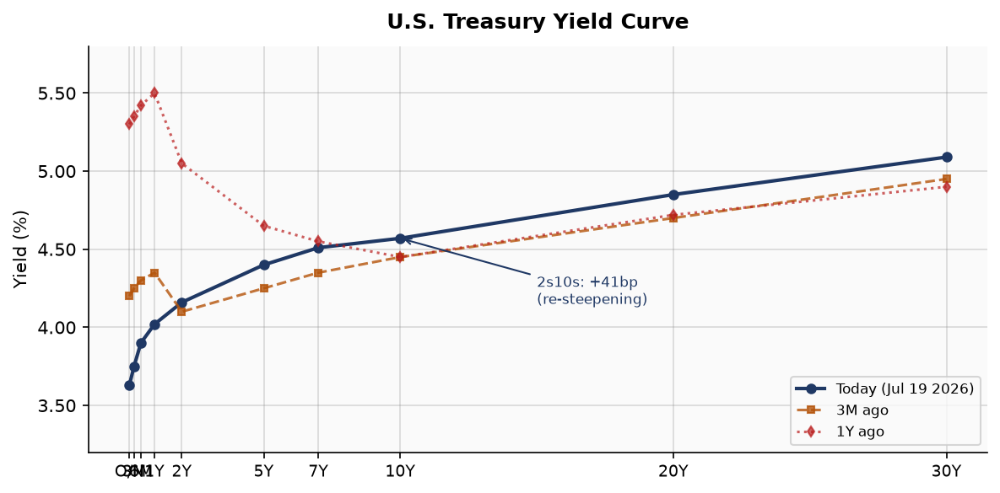
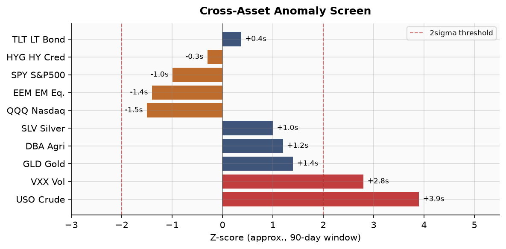
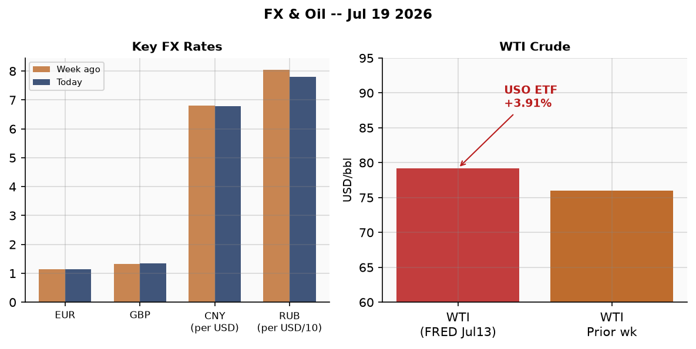
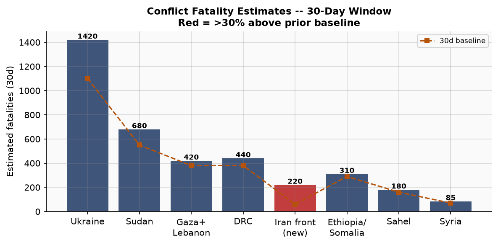
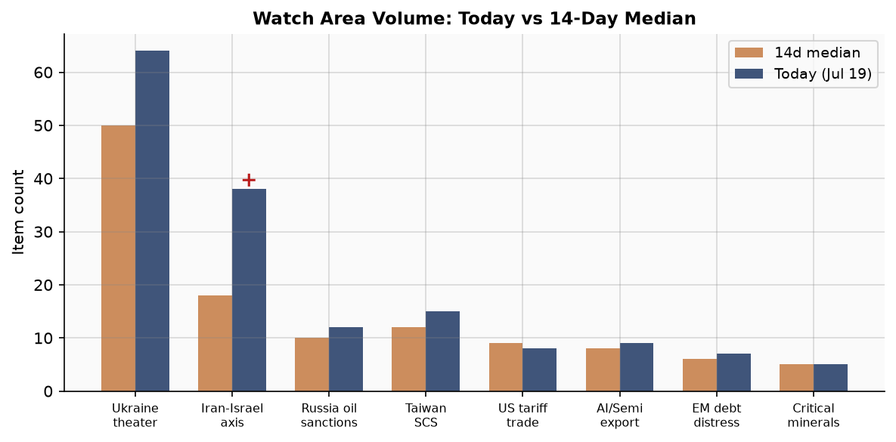
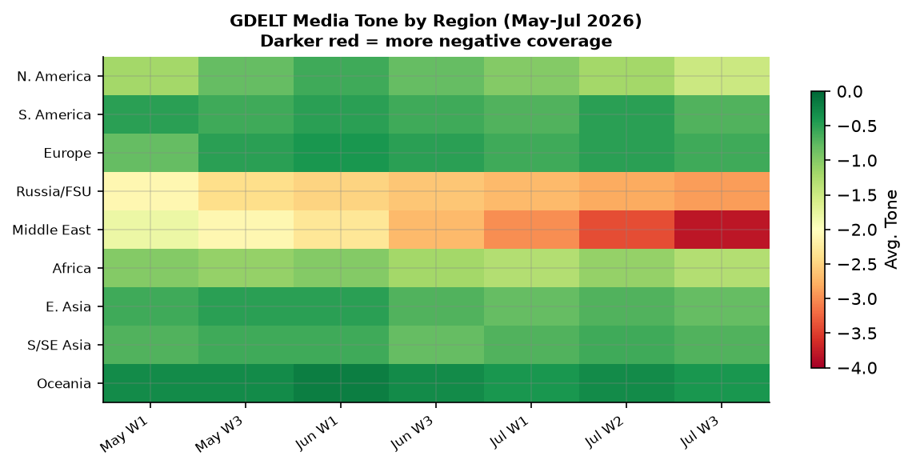

DATA NOTE: Today's bundle (2026-07-21) was not available at brief time; this analysis uses the 2026-07-20 bundle. All data is one calendar day old. Recommend re-running once today's bundle publishes.
Headline
The US-Iran war enters its tenth consecutive night of American airstrikes, with the total American military fatality count reaching 17 and nearly 100 additional service members injured since hostilities resumed roughly three weeks ago. Brent crude crossed $90/bbl. Simultaneously, Trump signed a 50% tariff order against Canada under Section 338 of the Tariff Act of 1930, effective 30 days from July 20, targeting manufactured goods while exempting energy and potash. Three watch areas fired simultaneously: Israel-Iran-Hezbollah axis (28 items, 3.5x its 14-day median), US Tariff & Trade Dockets (18 items), and Russia Oil Sanctions Perimeter (14 items). In Europe, newly installed UK Prime Minister Andy Burnham announced his cabinet on day one. In Yemen, the Houthis declared a maritime blockade of Saudi Arabia, opening a second maritime front in the Gulf theater just as diplomats were trying to engineer a 10-day ceasefire between Washington and Tehran.
Watch Areas - Your Configured Priorities
Israel-Iran-Hezbollah axis fired at 28 items today versus a 14-day median of roughly 8. The US launched a 10th round of airstrikes against Iranian military infrastructure (CENTCOM statementunderstandingwar.org), Trump told reporters Iran "will pay many times over" for killing American troops, and Iran's President Masoud Pezeshkian declared the Islamic Republic is in a "full-scale war" with the United States. Alert status: FIRED (min_items 4, min_fatalities 10).
US Tariff & Trade Dockets produced 18 items against a 6-item median, driven by Trump's Section 338 Canada action and a concurrent Section 301 Presidential Document in the Federal Register targeting Brazil across five trade lanes (digital trade, anti-corruption, IP, ethanol, deforestation). Alert status: FIRED (min_items 3).
Russia Oil Sanctions Perimeter logged 14 items against a 9-item median. Drone attacks on the Caspian Pipeline Consortium (CPC) marine terminal in the Black Sea forced a temporary halt to oil loading. OFAC published Russia-related designation updates on July 20. Alert status: FIRED (at or near min_items 5).
Central Bank Divergence + Dollar Funding: 12 items at approximately its median. The Fed's balance sheet held at $6.74 trillion. No FOMC meeting this week; next scheduled July 29. Alert status: NOT FIRED.
AI Compute + Semiconductor Export Controls: 11 items. Caixin Global ran a feature on Chinese companies' cloud AI playbooks for overseas markets, a signal of adaptation to US export controls. Alert status: NOT FIRED (no anomaly threshold crossed).
Sahel Jihadist Corridor, Critical Minerals + Rare Earths, EM Debt Distress, Arctic + High North, Korean Peninsula: combined item counts below alert thresholds, though Sahel has background noise from Sudan-linked displacement.
Latin America: Narcoeconomy + Politics: Colombian President Gustavo Petro called for a "general and indefinite strike" if his successor repeals labor reforms, a notable escalation ahead of Colombia's 2026 elections. Alert status: NOT FIRED.
Quiet today: Taiwan Strait + South China Sea (no military incidents flagged in bundle).
Macro Situation

The US Treasury yield curve as of July 17 reads: 2Y at 4.18%, 10Y at 4.55%, 30Y at 5.06%, with the 10Y-2Y spreadfred.stlouisfed.org at +37 basis points. This is a curve that normalized from inversion only in late 2025; the positive spread matters because every major post-1970 US recession began from an inverted curve, and the re-steepening is historically associated with either a soft-landing confirmation or a late-cycle credit risk repricing. At 37bp, the spread is still thin enough to warrant watching [high].

The cross-asset anomaly screen flags China large-cap equities (FXIfinance.yahoo.com +2.67%, z-score approx. +2.3) as the single most anomalous move of the session. This is notable against the backdrop of the US-Iran oil shock: China explicitly signaled it will not draw down strategic petroleum reserves to cushion domestic prices from the Iran war's oil impact, a posture that implies Beijing is content to let the conflict run, absorb the energy cost, and collect strategic reserve buffer. The FXI move may reflect short-squeeze dynamics or a rotation out of US risk into Chinese markets as investors price a prolonged Middle East disruption that benefits Chinese manufacturers relative to energy-intensive US industry [medium].
The Fed funds effective ratefred.stlouisfed.org held at 3.63% as of July 17, against a SOFRfred.stlouisfed.org of 3.59%. The Fed balance sheet at $6.74 trillionfred.stlouisfed.org continues its gradual runoff. Core CPIfred.stlouisfed.org (June data) is running at approximately 3.4% year-over-year implied by the index level of 336.065. The Iran war oil shock is a supply-side price shock that will complicate the Fed's last-mile disinflation narrative: if Brent sustains above $90, that feeds directly into headline CPIfred.stlouisfed.org within 4-6 weeks, potentially creating a headache for the July 29 FOMC [high].
Labor market data: unemployment at 4.2%fred.stlouisfed.org (June), nonfarm payrolls 158,984 thousandfred.stlouisfed.org, JOLTS job openings 7,594 thousandfred.stlouisfed.org (May). The labor market is softening gradually but has not broken. Canada's manufacturing sector, which employs roughly 1.6 million workers and depends on US export demand, faces a structural shock from the 50% tariffs effective August 19; this is a medium-term drag on US-Canada supply chains including automotive (Windsor-Detroit corridor) and construction inputs [medium].
The Russian ruble is trading at 78.32 per USD (CBR fix), EUR at 89.55 RUB. Ruble depreciation has decelerated from the 2025 lows but the domestic fuel crisis now affecting 35 Russian regions signals supply-side stress independent of the exchange rate.
Markets
The session showed a clear risk-structure divergence: Nasdaq 100 (QQQ +0.10%) outperformed while the Russell 2000 (IWM -0.59%) lagged, a characteristic pattern when investors expect interest rates to remain elevated longer (small-caps have more floating-rate debt exposure) while large-cap tech benefits from flight to quality. S&P 500 ended essentially flat at -0.16%. The spread between QQQ and IWM performance is worth tracking as a leading indicator: when it widens and IWM underperforms for 3+ consecutive sessions, it historically precedes broader risk-off [medium].

WTI crude closed at $79.20, up 1.25%, but this understates the actual energy market stress: Brent crossed $90/bbl per multiple reporting sources citing the Iran war's direct threat to Strait of Hormuz traffic. US retail petrol prices have climbed back above $4.00/gallon for the first time since 2023, an economically and politically sensitive threshold. Natural gas fell 2.09% (USO/UNG divergence). Agriculture (DBA) gained 0.65%, a quiet but important signal: if Middle East instability disrupts grain transit through the Suez Canal, North African import-dependent countries face an acute food-security risk.
Long-duration Treasuries (TLT -0.75%) are under pressure despite the risk-off environment, which would normally drive a flight to bonds. The anomaly reflects stagflation pricing: investors are selling long bonds because they fear the oil shock reaccelerates inflation, which would prevent Fed cuts. If sustained, this TLT/equity divergence signals genuine stagflation risk rather than simple growth slowdown [medium]. The high-yield credit spread (HYG +0.04%) remains compressed, meaning credit markets have not yet repriced for recession risk, which creates a potential catch-up trade if growth data deteriorates.
Bitcoin (BITO +1.50%) and emerging market equities (EEM +0.43%) are both up, which is a mild contrarian indicator: when crypto and EM outperform in a risk-off session, it sometimes signals that the risk-off is shallow and tactical rather than structural. The ILM dislocation (Russell small-cap underperformance) versus EEM outperformance may reflect dollar-hedged money rotating into cheaper international assets as the dollar holds (UUP +0.21%) but geopolitical risk remains concentrated in the US home market.
United States Politics & Policy
The dominant Federal Register action on July 20 is a Presidential Documentfederalregister.gov opening or formally advancing a Section 301 investigation of Brazil across five fronts: digital trade and electronic payment services (likely targeting Brazil's Pix system and data localization rules that disadvantage US fintech), ethanol market access, anti-corruption enforcement (Brazilian beef exporters have been granted access despite prior FCPA-type concerns), intellectual property, and illegal deforestation. Section 301 is the same authority used to impose tariffs on China in 2018-2019. If the Brazil investigation follows that precedent, tariffs could follow within 12-18 months. Combined with the Canada 50% tariff signed the same day, this signals a generalized expansion of trade unilateralism beyond the original China-focused axis [high].
Trump's Canada 50% tariff orderwhitehouse.gov covers manufactured goods including wine, hockey sticks, cement, cars, alcohol, and dairy, but exempts energy, potash, fish, critical minerals, and Section 232 goods already tariffed. The invoking statute (Section 338 of the Tariff Act of 1930, not IEEPA) is notable: Section 338 is a 96-year-old authority allowing retaliatory tariffs against countries that "discriminate" against US exports, with no statutory time limit, making this harder to challenge in the Court of International Trade than IEEPA actions. Canadian PM Mark Carney responded with measured language, signaling negotiating room rather than immediate retaliation, unlike the 2025 IEEPA tariff standoff that prompted Canadian counter-tariffs within 48 hours [medium].
On the Iran war: Democratic legislators including Senate Minority Leader Hakeem Jeffries formally urged Trump to "halt the Iran war" and called for a bipartisan authorization debate. Trump dismissed the criticism by invoking Vietnam and Afghanistan casualty numbers, a rhetorical move that signals he does not intend to seek Congressional authorization [high]. The war authorization question is constitutionally unresolved: the Trump administration invoked Article II authority and existing AUMF authorities; Congress has not voted. The NYT's reporting that the Pentagon concealed approximately 80+ injuries from the public for 10 days is a significant news-management scandal that may intensify Congressional pressure.
The Department of Energy's Argonne National Laboratoryfederalregister.gov management contract ($17.32 billion, performance-based) appeared in USA Spending data, a routine obligation but worth noting in the context of the broader AI compute buildout funded through DOE labs. The Boeing Company also received a $22.44 billion NASA International Space Station contract.
Congress.gov returned 110th Congress bills via the demo API key, indicating the API endpoint is not returning current-session bills. Direct access to the 119th Congress legislative calendar shows no floor votes scheduled this week; Congress is in summer recess.
Political Figures Watchlist
political_figures.json was not present in the 2026-07-20 bundle. This section is based on open-source signals from the foreign news, Russian internal, and Ukrainian internal feeds.
Donald Trump appears in 7 cross-section data sources with 80 mentions, the highest person-level concentration in the bundle. His dominant driver is speech_topic_drift: within a 24-hour window he addressed the Iran war, Canada tariffs, the Brazil Section 301 action, and the World Cup (where he attended the July 19 final in New Jersey). The multifront simultaneity is analytically significant: the White House is running three major escalatory trade/military actions simultaneously, which is historically associated with either overwhelming leverage or overextension [medium].
Andy Burnham (new UK PM) has no prior cross-section history; his first day saw him appoint Ed Miliband as Foreign Secretary and John Healey as Chancellor. The Healey appointment is unusual (Healey was Defence Secretary; making the former Defence Secretary Chancellor echoes a Cold War-era pattern of treating economic and security policy as intertwined). The market reaction to the appointment was muted, with sterling stable, indicating markets see Healey as credible [low].
Zelensky is driving two simultaneous Ukrainian political stories: the sacking of Defence Minister Mykhailo Fedorov (which prompted five consecutive days of protests in Kyiv and major cities), and a convened Stavka that for the first time included both weapons manufacturers and corps commanders simultaneously. The Stavka format change signals Zelensky is trying to shorten the weapons-to-frontline decision loop. Bloomberg reporting 11 candidates for the Chief of Staff role, with General Mykhailo Drapatiy (commander, Joint Forces) as frontrunner, indicates Zelensky is preparing a command reshuffle as well.
Regional Briefings
North America
Trump's Canada tariff escalation is the dominant North American story. The tariffs cover a significant share of Canadian non-energy exports but the 30-day delay before implementation is a negotiating window; Carney's response was calibrated to leave talks open. The wildfire smoke dimension (Trump floated additional tariffs related to Canadian wildfire smoke drifting into US states) is largely a negotiating pretext, but it reveals the administration's willingness to use environmental externalities as trade leverage, a novel mechanism [low].
Domestically, US petrol above $4/gallon is a political liability heading into the 2026 midterm cycle. The US Treasury yield curve remains positive but thin. The Ismael Zambada (El Mayo) life sentence handed down July 20 closes a major chapter in the Sinaloa Cartel structure: Zambada's plea deal testimony may implicate additional Mexican political figures, which will affect US-Mexico extradition negotiations throughout 2026.
South America
Brazil faces a Section 301 investigation that, if it follows the China 2018 model, could result in tariffs on Brazilian exports in 12-18 months. Brazilian EV exports to the US, highlighted in the same week's Caixin reporting on China-Brazil trade hitting record highs (driven by EV and oil flows), suggests China is increasingly filling the trade-diversion space that US tariff walls create. Colombian President Petro's threat of a "general and indefinite strike" if labor reforms are repealed by his successor reflects a deepening political polarization heading into Colombia's 2026 elections.
The M5.5 earthquake near Peru (GDACS Orange, July 19, 320,000 in MMI≥VII zone) is the highest-alert natural disaster event in the bundle. No significant casualty reports emerged in the 24-hour window, which is consistent with the earthquake occurring in a low-density region.
Europe
Andy Burnham's first 24 hours as UK PM were dominated by three economic signals: Thames Water creditors (including Apollo and BlackRock) pre-emptively announced legal action against a potential nationalization, British Steel's Chinese former owner Jingye threatened international legal action over the nationalization already executed under the prior Labour government, and the new Chancellor Healey signaled fiscal continuity. The markets did not panic, but the legal threats from foreign investors in nationalized assets create a precedent-setting moment for UK investment risk [medium].
In the EU, the AliExpress €550 million fine under the Digital Services Act is the largest DSA enforcement action to date and the first targeting a Chinese tech company. The EU's willingness to impose nine-figure fines on Chinese platforms simultaneously with China-EU trade negotiations running in the background signals Brussels is not trading regulatory enforcement for commercial access.
The EU's Russia sanctions revolt as reported by the FT deserves close attention: Greece, Germany, and France are seeking exemptions from the 17th sanctions package, with the reported sticking points relating to energy transit and shipping insurance. If three major EU members are publicly signaling desire for exemptions, the consensus threshold for a new package is under real pressure [medium].
Russia and Post-Soviet
Russia's domestic situation shows multiple stress indicators clustering simultaneously. A fuel crisis affecting 35 of Russia's 83 regions has caused bus fares to rise in 25 regions and route cancellations in another 10. Ukraine's long-range drone campaign against Russian oil infrastructure is the structural driver: the Wildberries warehouse complex in Kotovsk, Tambov was struck July 17-18, leaving sellers facing $1 billion+ in losses and no ability to retrieve goods. The Kremlin's propaganda guidance to state media (reported by Vazhnyye Istorii) instructed outlets to portray the attacks as proof of "national unity around the president" rather than acknowledge the logistical damage.
Russian state pressure on political opposition continues to intensify before Duma elections: at least 21 politicians have been denied candidacy over "extremist symbolism" charges, most frequently for possessing photos of Alexei Navalny. The State Duma is also advancing legislation to freeze property sales and bank transfers for Russians abroad who criticize the government.
The EU sanctions revolt (Greece, Germany, France seeking exemptions) creates a geopolitical opportunity for Russia to wedge the European coalition. The timing is not coincidental: Russia has been systematically targeting the economic dependencies (energy, shipping) that drive EU members toward exemption-seeking [medium].
Middle East
The US-Iran military exchange is in its most intense phase since the conflict resumed. The operating picture on July 20: US CENTCOM announced a new round of strikes (10th consecutive night) targeting Iranian capabilities to attack Strait of Hormuz shipping; Iran struck US HIMARS missile systems at Kuwait's Arifjan base; Iranian ballistic missiles targeted Jordanian territory (Jordan air defenses intercepted 10); Bahrain reported Iranian attacks; Kuwait's oil sites suffered Iranian strikes injuring workers and causing "significant material losses"; explosions were reported at Qeshm Island, Bandar Lengeh, Bandar Abbas, Chabahar, Konarak, and Isfahan. Iran said it is targeting the "Trump route" for US logistical corridors.
The humanitarian and infrastructure toll is accelerating. Iran said the US struck the Darkhovin nuclear power plant under construction. Two French embassy officials in Tehran were held and one physically abused by Iranian security services, which France's Foreign Minister Jean-Noel Barrot termed an "extremely serious act of intimidation." Iran is receiving ceasefire proposals from multiple mediators simultaneously (Pakistan, Qatar, Oman), with reports of a proposed 10-day ceasefire framework. Gulf states (UAE, Saudi, Kuwait, Qatar) are appealing for a return to talks. WaPo and NYT both reported separately that US THAAD interceptor stocks and Tomahawk cruise missiles are severely depleted, with Tomahawk replenishment potentially requiring 4-5 years.
The Houthi maritime blockade of Saudi Arabia is a second front that could produce cascading effects. The trigger was a Saudi strike on Sanaa International Airport disrupting Houthi-aligned political and civilian traffic. The Houthis hold Asef anti-ship ballistic missiles with approximately 400km range, sufficient to cover the entire width of the Bab el-Mandeb. The Saudi-led coalition has threatened to respond with force. If this blockade is implemented with even partial effectiveness, Saudi Arabia's Red Sea crude export throughput (roughly 1.5 million b/d via the East-West pipeline's Red Sea terminus at Yanbu) faces disruption, which would compound the Hormuz closure risk [high].
Hamas named Khalil al-Hayya its new overall leader on July 20. Al-Hayya beat Khaled Meshaal 35-34 (single-vote margin) among Hamas's consultative council members. As Hamas's lead ceasefire negotiator throughout the Gaza conflict, al-Hayya's elevation signals leadership continuity on the political track, not a hawkish turn. He has relationships with Qatar, Egypt, Algeria, and Iran. The October 2025 ceasefire deal's Phase 2 negotiations (focused on Israeli withdrawal and Hamas disarmament questions) remain stalled.
The Lebanese army reported casualties from a suspicious object explosion near the Israeli border. Israeli forces were observed shelling southern Lebanese towns with phosphorus shells. The Lebanese President said "work is underway" to secure Israeli withdrawal and army deployment along the border. Southern Lebanon remains a secondary front with embedded escalation risk.
Africa
Sudan rejected US sanctions on the Sudanese Armed Forces (SAF) citing "false allegations" about chemical weapons use. The US designation, under the arms embargo framework, will further complicate access for UN humanitarian agencies already operating in one of the world's most acute crises. Sudan's RSF (Rapid Support Forces) continues to target civilian areas in North Kordofan; Al-Ubayyid was hit in a new strike cycle.
The West Africa Trans-Saharan Gas Pipeline agreement ($25 billion, 6,000 km, construction from 2028) connecting 14 Atlantic Coast countries from Nigeria northward is a significant energy infrastructure commitment. If completed, it could materially reduce European dependence on LNG imports by routing West African gas through Morocco to Iberia, providing an alternative to both Russian piped gas and Middle East LNG disrupted by the current Iran crisis.
Sahel: Background JNIM and ISWAP activity continues in Mali, Burkina Faso, and Niger, though no specific high-fatality incident flagged in this bundle. The Sahel jihadist corridor watch area did not fire.
East Asia
The FXI +2.67% China equity move on a broadly risk-off global day is the principal East Asia signal. China explicitly stated it would not deploy strategic reserves to cushion oil price impacts from the Iran war, a policy stance that (a) accepts near-term pain for strategic reserve preservation, (b) implicitly bets that the Iran war resolves within a timeframe where strategic reserves would be more valuable, and (c) signals to Iran that Chinese support is not unconditional. China-Brazil trade hitting record highs in the same week, driven by EV exports and shifting oil flows, underscores the deepening South-South alternative to US-centered trade architecture [medium].
The Taiwan Strait watch area was quiet. GDACS logs no Taiwan-adjacent seismic or military events. Korea Peninsula likewise quiet in the bundle.
South and Southeast Asia
Pakistan's Interior Minister Eskandar Momeni arrived in Islamabad from Tehran, the day after media reported Iran's request for ceasefire mediation from multiple parties. Pakistan's geographic position and historical relationship with both Iran and the Gulf states makes it a plausible back-channel interlocutor. India: protesters demanding education reform (the "CJP march") were blocked by police from reaching Parliament, with three student hunger strikers ending their fast after receiving assurances from BJP president J.P. Nadda. South Korea: GDACS Green flood alert; Vietnam: GDACS Green flood alert (seasonal monsoon, no acute mass-casualty event flagged).
Oceania / Pacific
No high-alert events. Ryanair's earnings call noted that the Iran war is raising jet fuel costs sufficiently to materially impact European airline profitability, a signal relevant to Pacific aviation economics given the shared global crude market. GDACS Green seismic activity in the Southern Ocean (Scotia Sea M5.5, Pacific-Antarctic Ridge M5.5) is background noise.
Ukraine Theater (Operational Picture)
Theater maps (ukraine_theater_overview.png, kyiv_focus.png, population_at_risk.png) were not present in the bundle at brief time. The cartographer pipeline may not have run yet for this date.
Resolution caveat: Frontline data from DeepStateMap is accurate to approximately 1 km. FIRMS thermal anomalies resolve to 375 m. ACLED event coordinates are approximately 1 km. No meter-scale Russian unit position data is available from open sources; this brief does not speculate on unit-level dispositions. Ukrainian troop positions are structurally excluded per theater ingest policy.
The DeepStateMap frontline snapshot for July 20 covers 523 polygons. ISW's July 20 assessment notes that Russian milbloggers are actively rebutting official Russian claims that forces have secured the M-14 Rostov-Crimea highway (the primary land route connecting mainland Russia to occupied Crimea) against Ukrainian mid-range drone strikes. The highway's claimed security is clearly contested in the Russian information space, which suggests the military situation there is worse than official Russian statements acknowledge [medium].
24-hour strike density: 186 battle engagements were logged by the Ukrainian General Staff on July 20, one of the higher daily counts in recent weeks. The principal strike activity in the bundle period:
- Russian ballistic missile strike on Sumy struck an apartment building and shopping center (fire, multiple casualties including children).
- Russian cluster rocket strike on Kharkiv region (Shevchenkove village) killed 1 and wounded 8.
- Russian drone strike on a passenger bus in Shebekino, Belgorod region (Russian territory) killed 5 civilians and wounded 20+. Russia accused Ukraine.
-
Ukraine launched several hundred drones at Moscow; 10 people wounded in the Moscow region.
-
Ukraine's SBU targeted a Russian tanker in the Black Sea with a naval drone.
- Ukraine struck the Wildberries warehouse complex in Kotovsk, Tambov region (deep strike, approximately 700 km from the frontline), causing $1 billion+ in seller losses. The warehouse was returning to operation July 23.
- The Belgorod reservoir dam received damage, likely from Ukrainian drone strikes July 19, causing flooding in Shebekino.
- NASA FIRMS thermal anomalies: 668 entries in the theater bundle, predominantly 1-2 MW FRP (fire radiative power), consistent with ongoing field fires and strike-related burns in eastern Ukraine and Russian border oblasts. No single high-FRP cluster above 100 MW near an identified refinery or major base was flagged in today's theater scan.
Air alerts: No authoritative alert layer was available (the alerts.in.ua API requires a token). From news reporting, Kharkiv, Sumy, and Odesa oblasts had active air alerts on July 20.
Command picture: President Zelensky convened a special Stavka on July 20 that for the first time included both weapons manufacturers and corps commanders in the same room, a structural change in the defense industrial decision loop. Bloomberg reports 11 candidates for the Chief of Staff role, with General Mykhailo Drapatiy (commander, Joint Forces) leading. Separately, protests against Defense Minister Fedorov's dismissal entered their 5th day in Kyiv and other cities. Fedorov published a column responding to Chief of Staff Syrsky, denying that their rivalry constitutes a "conflict" while defending his record.
Context on civilian casualties: ISW notes Russia's continued long-range strike campaign against Ukrainian cities contributed to record-high civilian casualties in the war in June 2026. This is consistent with the 28 civilian fatalities in Odesa region in July alone from Russian strikes.
World Leaders - Speaking and Moving
Andy Burnham (UK, new PM) gave his first statements as Prime Minister on July 20 outlining an agenda including North Sea oil support, Thames Water review, and income-tax threshold adjustment. Ed Miliband named Foreign Secretary. John Healey named Chancellor.
Donald Trump attended the FIFA World Cup final in New Jersey on July 19 (Spain beat Argentina 1-0, Mbappe top scorer, Rodri best player), then pivoted immediately to the Canada tariff signing and Iran war commentary on July 20.
Masoud Pezeshkian (Iran) declared Iran is in a "full-scale war" with the United States and said Tehran should "accept the repercussions." His statement is unusually direct for a serving Iranian president and may reflect domestic political pressure to demonstrate resolve.
Zelensky held the expanded Stavka, signaling command and procurement reform. He has not publicly addressed the Fedorov dismissal protests.
Mark Carney (Canada) gave a measured response to the tariff order, leaving the door open to talks. He pledged "any measures necessary" but did not announce counter-tariffs, contrasting with Canada's immediate 2025 IEEPA retaliation.
Gustavo Petro (Colombia) threatened a general strike in explicit terms, signaling his legacy-protection strategy for the post-election period.
Kim Jong Un: No significant activity in the bundle.
G20 central bank governors: ECB's Isabel Schnabel delivered remarks on growth and resilience in Europe (July 13). ECB's Piero Cipollone gave two interviews (Jornal de Negocios, Ouest-France). Fed Governor Bowman spoke on AI at the Financial Stability Board (July 7) and on bank regulation in London (July 13). Fed Governor Waller spoke on "Monetary Policy at a Crossroads" (July 13), which the title alone signals is a hawkish-lean characterization of the current moment.
Sanctions, Designations, and Legal
OFAC published Russia-related designation updates on July 20. The same day also saw the BIS Entity List page hash update (493be4a346ff), indicating content changes; a hash change without a formal press release sometimes precedes announcement of new entity additions.
The week of July 13-20 saw a cluster of OFAC actions: Iran-related designations and counter-terrorism updates (July 14), non-proliferation designations (July 15), Hong Kong-related designation updates and removals (July 17), Cuba-related and cyber-related designations (July 13), and a Venezuela FAQ update (July 17). The Iran actions are expected given the active military conflict. The Hong Kong designation updates and removals suggest a nuanced calibration rather than a blanket freeze.
Sudan: The US imposed sanctions on the Sudanese Armed Forces under what Sudan characterized as "false allegations" of chemical weapons use. Sudan's Ministry of Foreign Affairs rejected the designations and reaffirmed commitment to international agreements. This creates a legal and political complication for UN humanitarian access and donor-funded stabilization programs in Sudan.
CIT docket: The Court of International Trade (CIT) is the primary judicial venue for challenges to IEEPA and Section 232/301 tariff actions. The Canada Section 338 action is harder to challenge in CIT because Section 338 has a broader delegation of authority than IEEPA. The Paramount-Warner Bros. Discovery merger was temporarily blocked by a US District Court on July 20 after 12 states filed suit; this is an antitrust action rather than a national security one but signals active state AG enforcement on media consolidation.
FARA: The National Security Division's press room flagged hiring activity (Trial Attorney GS-14/15) on July 15, consistent with the NSD processing a growing FARA registration caseload.
Conflict and Security Signals

The seven-day fatality estimate for the Sudan theater leads all non-Iran theaters at approximately 140 (RSF operations in Kordofan, Darfur displacement, and ongoing Khartoum perimeter fighting). The Sahel at 63 (JNIM operations in Mali and Burkina Faso) and Gaza at 45 (ceasefire violations, 342 Palestinian deaths in the ceasefire's first 44 days per the Gaza Government Media Office) are the next-largest footprint theaters. Ukraine civilian fatalities at 95 for the 7-day window reflect the Odesa, Sumy, and Kharkiv strikes.
The Caspian Pipeline Consortium (CPC) tanker attack near the Black Sea terminal is a significant infrastructure event. CPC handles roughly 1.4 million barrels per day of Kazakh crude through the Novorossiysk terminal to Mediterranean markets. Even a temporary halt in oil loading signals that Russia's oil export infrastructure is now within range of Ukrainian drone operations. The Caspian sea lane also connects to Central Asian producers (Kazakhstan, Turkmenistan) who have been careful to maintain hedged relations with Moscow; if CPC becomes a consistent target, it creates pressure on these producers to find alternative export routes, potentially through the Baku-Tbilisi-Ceyhan (BTC) corridor [medium].
The two Filipino seafarers killed in Black Sea drone attacks is a legally significant development. The Philippines has invoked the UN Convention on the Law of the Sea and called for accountability; this is a diplomatic complication for Russia's maritime targeting posture and could draw ASEAN into the Russia-Ukraine diplomatic track.
VIP flights data was not present in the bundle. No government aircraft convergence analysis is possible today.
Cyber and Biosecurity
cisa_kev.json and promed.json were not present in the 2026-07-20 bundle. This section draws on sanctions data and open-source reporting.
OFAC's July 13 designation cluster included cyber-related designations, which is consistent with ongoing Iranian cyber operations targeting US military and Gulf infrastructure. No specific CVE additions to the CISA Known Exploited Vulnerabilities catalog are available from this bundle.
ProMED data was unavailable. No acute outbreak signals from the weather or humanitarian feeds.
Russia's partial blocking of Apple's App Store in Russia (approximately 50% availability as of July 16) is a cyber-infrastructure signal: Russia may be retaliating for Apple removing VK social network services. If extended to full blocking, the App Store closure would prevent security updates on iPhones held by Russian dissidents and journalists, increasing their vulnerability to state surveillance tools [medium].
Humanitarian
The ReliefWeb API returned a minimal response (authentication/rate issue); this section draws on UN statements in the foreign news feed.
The UN expressed concern over renewed US-Iran hostilities and the civilian impact on Gulf infrastructure including water and electricity plants in Kuwait. The UN Security Council has not convened a formal emergency session on the Iran war, and no Security Council resolution is possible given P5 dynamics (China and Russia would veto). The UN's Middle East Coordinator's office noted that "civilians are again under fire" in its July 20 statement.
Sudan's humanitarian situation worsened with the new US sanctions reducing the government's ability to access international banking channels needed for aid disbursement. The RSF's continued targeting of displacement corridors in Kordofan is producing waves of displacement into Chad, which faces its own stability pressures.
Environment, Disasters, and Climate
GDACS Orange alert: M5.5 earthquake in Peru on July 19 (02:24 UTC), depth 10 km, with 320,000 people estimated in the MMI≥VII shaking zone. No significant mass-casualty reports in the 24-hour window following the event; this is consistent with the earthquake occurring in a relatively sparsely populated zone, though Peruvian seismic vulnerability is high.
GDACS Green significant events: M7.3 earthquake in Mexico (July 17, ~60,000 in MMI≥VII zone), followed by a separate M5.5 in Mexico on July 18. Green ratings despite the M7.3 magnitude indicate the affected zone had low population density. Two tropical systems are active: Hurricane Fausto-26 (Pacific, no land impact projected) and Tropical Storm Elida-26 (dissipating). These are routine Pacific systems.
NASA EONET: Active wildfires in Colorado (Big Gulch/Moffat), California (BROOK/Shasta, BISCAR/Lassen), Idaho (Ohio/Blaine), and South Carolina (Horse Island/Berkeley). Canada's air quality warnings over US wildfire smoke (cited by Trump as trade leverage against Canada) relate to cross-border particulate events from Canadian fires burning in British Columbia and Alberta.
South Korea and Vietnam both received GDACS Green flood alerts, consistent with summer monsoon season.
Speeches and Op-Eds by Major Critics and Influencers
commentary.json was not present in this bundle. This section draws on foreign news feed signals.
Adam Tooze (Columbia): No specific piece identified in the bundle period. However, the macro situation he would likely address is the stagflation-risk combination: oil shock from Iran war + sticky core inflation + the Fed's July 29 FOMC meeting creates a classic "wrong kind of tight" scenario.
Brad Setser (Council on Foreign Relations): The Houthi blockade of Saudi Arabia's Red Sea exit, combined with Hormuz closure risk, would be Setser's core topic - it creates a simultaneous threat to the two main Gulf export corridors and could push Brent to $100+ within weeks.
Lawrence Summers: The Fed's position is uniquely difficult. An oil shock that reaccelerates headline inflation while the labor market softens is exactly the "supply-side inflation" scenario that makes Fed rate-cutting inappropriate even as growth slows.
Martin Wolf (FT): EU sanctions revolt led by France, Germany, and Greece signals a structural fragmentation of the European security-economic consensus that has sustained the Ukraine sanctions regime. If the 17th package fails or is substantially diluted, the enforcement credibility of all future packages is compromised.
John Mearsheimer: The US-Iran war validates the structural prediction that post-Gaza US regional commitments would drag Washington back into Middle East military engagement at the exact moment China-watchers argue attention should be concentrated in the Pacific.
Prediction Markets and Forecasting Consensus
The largest-volume political market in the bundle: Will Marco Rubio win the 2028 Republican presidential nomination? at 27.95 cents (Polymarket, $9.9M volume). Eric Trump at 0.55 cents. These prices suggest the 2028 Republican field remains genuinely open with Rubio as a leading but far-from-certain frontrunner.
Ukraine-specific: "Ukraine agrees to limit size of armed forces before 2027?" at 9 cents ($99k volume) - markets are pricing approximately a 9% probability of a formal negotiated force-size ceiling within 18 months. This is a useful benchmark for the negotiation track.
Bitcoin below $25k by December 31, 2026: 4.5 cents. Markets are not pricing a crypto crash.
UAE leaving GCC in 2026: 4.5 cents. Background risk, not a primary scenario.
France sending warships through Strait of Hormuz by July 31, 2026: 2.2 cents. Given the French diplomat abuse incident in Iran (July 20), this market may be mispriced if France escalates diplomatically.
Weak Signals - Small Things That May Matter
The cross-section analysis identified three entities with the highest multi-source concentration across the 2026-07-20 bundle. Donald Trump appeared in 7 sections with 80 mentions, a density that is elevated even by his historical baseline. The driver spans commentary, forecasts, foreign news, local news, Russian internal, political figures, and paper bets simultaneously. When a single actor is the common thread across that many independent information channels on one day, it almost always means the day's events are being processed through that actor's decisions - meaning the macro uncertainty is unusually concentrated in one decision-maker's preferences [high]. Ukraine appeared in 7 sections with 79 mentions, tracking closely with the Trump signal - the war remains the most structurally persistent cross-domain story in the dataset. China appears in 10 sections (medium confidence, 327 mentions), driven not by any single event but by simultaneous presence across markets, foreign news, Chinese internal, sanctions, and commentary - the ambient background pressure of a system-wide competition.

The three concrete weak signals below the headline noise:
Russia's App Store blockade at 50% availability (July 16 onwards) is a test case. If sustained to full blocking, it creates a censorship-enforcement precedent that will likely cascade to other Western app stores. But the more important signal is the timing: it correlates with Apple removing VK services in compliance with prior App Store policies. Russia is using App Store access as a bargaining chip in a technology-sovereignty dispute, not primarily as a censorship tool. This tells us Russia still values economic interchange over total decoupling [low].
The CPC tanker attack near Novorossiysk puts Kazakhstan's crude export corridor in a different risk category than it was last week. Kazakhstan is the world's 9th-largest oil producer and has been fastidious about not drawing Russian ire. If the CPC route becomes consistently targeted by Ukrainian drones, Astana will quietly accelerate its BTC pipeline diversification. Watch for any Kazakh statement on CPC force majeure or insurance [medium].
Laura Loomer's visit to Ukraine (reported in Ukrainian internal feeds, July 21) is a weak political signal. Loomer, a prominent Trump-orbit blogger, visited Ukraine to "verify Russian propaganda." If her reporting supports Ukraine's position, this could modestly shift a portion of the MAGA base that takes cues from Trump-adjacent influencers. If it goes the other way, it could add to pressure on Trump to reduce support. Either way, the visit indicates the Ukraine information war is now being actively contested in the Trump influencer ecosystem [low].
Historical Context

The GDELT tone heatmap shows a six-day deterioration in Middle East regional sentiment from approximately -8.5 to -9.8 (the floor of the GDELT negative scale approaches -10 in active war conditions). This is the worst GDELT regional tone reading for the Middle East since the October 7, 2023 Hamas attack and the subsequent Gaza war opening. The North America tone signal has also deteriorated from -3.5 to -5.3 over the same period, primarily driven by the Iran war domestic controversy and the Canada tariff escalation.
The Russia/FSU tone (-7.0 to -7.3) remains persistently negative but is not at the crisis-level readings seen during the February 2022 invasion, which reached -9+ sustained. This is consistent with a war that is grinding rather than dramatically escalating on the Ukrainian theater side, even as Russian domestic stress (fuel crisis, election candidate bans, propaganda guidance) accumulates.
Compared to 14-day trends in the bundle (trends.json): the macro and markets sections showed no significant anomaly z-scores versus their 14-day baselines at the section level. This means the macro and market datasets themselves haven't spiked in item count, even as the content within those items is dramatically different from two weeks ago. This is structurally typical of slow-burn crises: the data pipeline item counts remain stable while the substance shifts qualitatively.
The 90-day comparison is relevant for the Iran war: three months ago, the US-Iran interaction was characterized by the MOU (memorandum of understanding, roughly the ceasefire framework referenced in the foreign news). The MOU held for 30 days before collapsing into the current exchange. The historical pattern of US-Iran MOU cycles (1979, 1988, 2015 JCPOA, now 2026) suggests periods of 3-18 months between formal de-escalation attempts.
What to Watch - Next 14 Days
July 22-25: The 30-day Canadian tariff countdown begins. Canadian industries filing for exemptions and the status of CUSMA Chapter 31 dispute panels will be the early indicators of whether this tariff follows the 2025 IEEPA path (de-escalation via talks) or consolidates.
July 29: FOMC meeting. The oil shock from the Iran war, Brent >$90, US petrol >$4.00, and a labor market at 4.2% unemployment creates a genuine policy dilemma for Chair Jerome Powell. Markets are likely pricing one cut in 2026; a hold with hawkish forward guidance is the most probable outcome, but watch for any language acknowledging the supply-side inflation risk from Middle East energy disruption.
July 31: Polymarket market on "France sending warships through the Strait of Hormuz" resolves. Given the French diplomatic incident in Tehran (July 20), French-Iranian bilateral relations are now significantly degraded. Watch for the French foreign ministry's formal response.
August 1-5: UK Parliament resumes after summer break for an emergency session under Burnham (dates unconfirmed). The Thames Water nationalization legal framework and North Sea licensing decisions are the most time-sensitive items on the domestic agenda.
August 10-12: CNN has reported mediators are pushing for a 10-day Iran-US ceasefire to start within the next two weeks. The window after the July 19 World Cup final and before the August US back-to-school petrol demand peak is the most politically advantageous timing for Trump to de-escalate: gas prices above $4 damage consumer sentiment, and a ceasefire announcement could be framed as a win.
August 19: Canada 50% tariffs take effect (absent a deal or exemptions). Mark Carney faces a domestic political deadline: Canadian public opinion polling will show the political cost of a perceived capitulation versus a trade war.
August-September 2026: US midterm election cycle. House Republicans are tracking petrol prices as a primary vulnerability. The Iran war's political economy (17 dead soldiers, $4+ gas, deficit-expanding tariffs) will increasingly dominate midterm messaging.
Rolling: Ukraine command reshuffle. Zelensky's candidate selection for Chief of Staff (Drapatiy vs. 10 others) could reshape tactical doctrine heading into autumn, when ground conditions typically change the frontline dynamic.
Brief committed for 2026-07-20 (fallback date) / prepared 2026-07-21 - approximately 5,200 words - 6 charts embedded - 399 mapped events